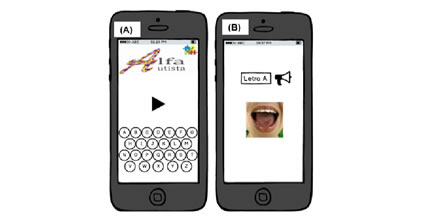
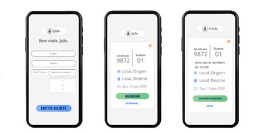
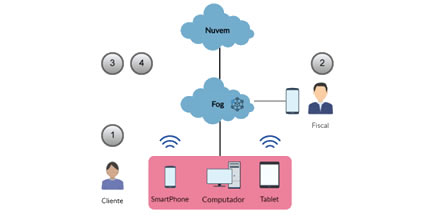
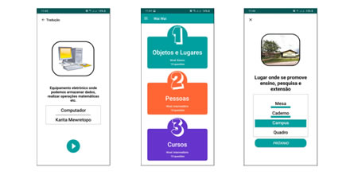

New
Projeto para autistas
Esse projeto tem como objetivo realizar a busca por metodologias ativas através do uso de ferramentas computacionais (aplicativos mobile) para auxiliar no aprendizado de crianças com TEA (Transtorno do Espectro Autista).
Since:
February 12, 2018

New
Projeto Navegação Fluvial [Sistema]
Esse projeto tem como objetivo desenvolver um sistema de gerenciamento de dados referente à navegação fluvial na região do Baixo Amazonas (Santarém e adjacentes).
Since:
October 06, 2022

New
Projeto Navegação Fluvial [Blockchain]
Esse projeto tem como objetivo implementar uma blockchain para disponibilizar uma camada de segurança adicional ao gerenciamento de dados referente à navegação fluvial na região do Baixo Amazonas (Santarém e adjacentes).
Since:
October 06, 2022

Esse projeto tem como objetivo realizar a busca por metodologias ativas através do uso de ferramentas computacionais (aplicativos mobile) para auxiliar no aprendizado da língua portuguesa pelos discentes indígenas da região.
Since:
February 11, 2020